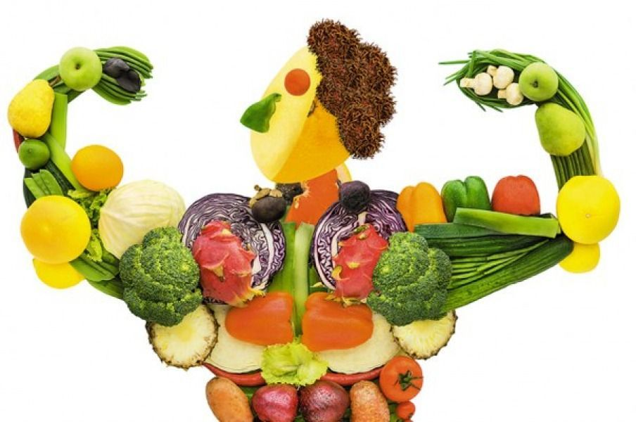

Для взрослых людей
Здоровое питание включает следующие компоненты:
- Фрукты, овощи, бобовые (например, чечевица, фасоль), орехи и цельные злаки (например, непереработанная кукуруза, просо, овес, пшеница и неочищенный рис).
- По меньшей мере, 400 г (то есть пять порций) фруктов и овощей в день (2), кроме картофеля, сладкого картофеля, маниока и других крахмалсодержащих корнеплодов.
- Свободные сахара должны составлять менее 10% от общей потребляемой энергии (2, 7), что эквивалентно 50 г (или 12 чайным ложкам без верха) на человека с нормальным весом, потребляющего около 2000 калорий в день, но в идеале, в целях обеспечения дополнительных преимуществ для здоровья, они должны составлять менее 5% от общей потребляемой энергии. Свободные сахара это все сахара, добавляемые в пищевые продукты или напитки производителем, поваром или потребителем, а также сахара, естественным образом присутствующие в меде, сиропах, фруктовых соках и их концентратах.
- Жиры должны составлять менее 30% от общей потребляемой энергии (1, 2, 3). Необходимо отдавать предпочтение ненасыщенным жирам (содержащимся в рыбе, авокадо и орехах, а также в подсолнечном, соевом, рапсовом и оливковом масле) в отличие от насыщенных жиров (содержащихся в жирном мясе, сливочном масле, пальмовом и кокосовом масле, сливках, сыре и свином сале) и трансжиров всех видов, включая как трансжиры промышленного производства (содержащиеся в запеченных и жареных продуктах, заранее упакованных закусочных и других продуктах, таких как замороженные пиццы, пироги, печенье, вафли, кулинарные жиры и бутербродные смеси), так и трансжиры естественного происхождения (содержащиеся в мясной и молочной продукции, получаемой от жвачных животных, таких как коровы, овцы, козы и верблюды). Рекомендуется сократить потребление насыщенных жиров до менее 10% и трансжиров до менее 1% от общей потребляемой энергии (5). Особенно следует избегать потребления трансжиров промышленного производства, которые не входят в состав здорового питания.
- Потребление менее 5 г соли (эквивалентно примерно одной чайной ложке) в день (8). Соль должна быть йодированной.
